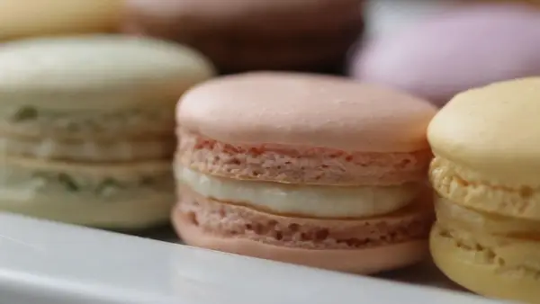

Macarons
By: Jody Tixier & Alexis Deboschnek (Tasty Team)
I got this recipe from this website
all elements in this page are from the link above.

Whats In It?
It’s never a bad time for dessert. Cookies, cake, pie, you name it!
But sometimes you need to change it up with something a little fancier:
enter macarons. They may seem intimidating but with our easy-to-follow
guide, they don’t have to be. And you can customize them!
Want a variety? Use different types of food coloring. Prefer a different
flavored icing? Add some lavender extract for a floral feel. One bite,
and you’ll feel like you’re in Paris yourself.
ingredients (for 30 macarons)
- 1 ¾ cups powdered sugar
- 1 cup almond flour, finely ground
- 1 teaspoon salt, divided
- 3 egg whites, at room temperature
- ¼ cup granulated sugar
- ½ teaspoon vanilla extract
- 2 drops pink gel food coloring
Vanilla Buttercream
- 1 cup unsalted butter, 2 sticks, at room temperature
- 3 cups powdered sugar
- 1 teaspoon vanilla extract
- 3 tablespoons heavy cream
Steps
-
Make the macarons: In the bowl of a food processor,
combine the powdered sugar, almond flour, and ½
teaspoon of salt, and process on low speed, until extra fine.
Sift the almond flour mixture through a fine-mesh sieve into a
large bowl.
-
In a separate large bowl, beat the egg whites and the
remaining ½ teaspoon of salt with an electric hand mixer
until soft peaks form. Gradually add the granulated sugar
until fully incorporated. Continue to beat until stiff peaks
form (you should be able to turn the bowl upside down
without anything falling out).
-
Add the vanilla and beat until incorporated.
Add the food coloring and beat until just combined.
-
Add about ⅓ of the sifted almond flour mixture at a
time to the beaten egg whites and use a spatula to gently
fold until combined. After the last addition of almond
flour, continue to fold slowly until the batter falls into
ribbons and you can make a figure 8 while holding the
spatula up.
-
Transfer the macaron batter into a piping bag fitted with a round tip.
-
Place 4 dots of the batter in each corner of a rimmed baking sheet,
and place a piece of parchment paper over it, using the batter to
help adhere the parchment to the baking sheet.
-
Pipe the macarons onto the parchment paper in 1½-inch
(3-cm) circles, spacing at least 1-inch (2-cm) apart.
-
Tap the baking sheet on a flat surface 5 times to release any air bubbles.
-
Let the macarons sit at room temperature for 30 minutes to
1 hour, until dry to the touch.
-
Preheat the oven to 300˚F (150˚C).
-
Bake the macarons for 17 minutes, until the feet are
well-risen and the macarons don’t stick to the parchment paper.
-
Transfer the macarons to a wire rack to cool completely before filling.
-
Make the buttercream: In a large bowl, add the butter and beat with
a mixer for 1 minute until light and fluffy. Sift in the powdered
sugar and beat until fully incorporated. Add the vanilla and beat
to combine. Add the cream, 1 tablespoon at a time, and beat to combine,
until desired consistency is reached.
-
Transfer the buttercream to a piping bag fitted with a round tip.
-
Add a dollop of buttercream to one macaron shell.
Top it with another macaron shell to create a sandwich.
Repeat with remaining macaron shells and buttercream.
-
Place in an airtight container for 24 hours to “bloom”.
-
Enjoy!
Back Home